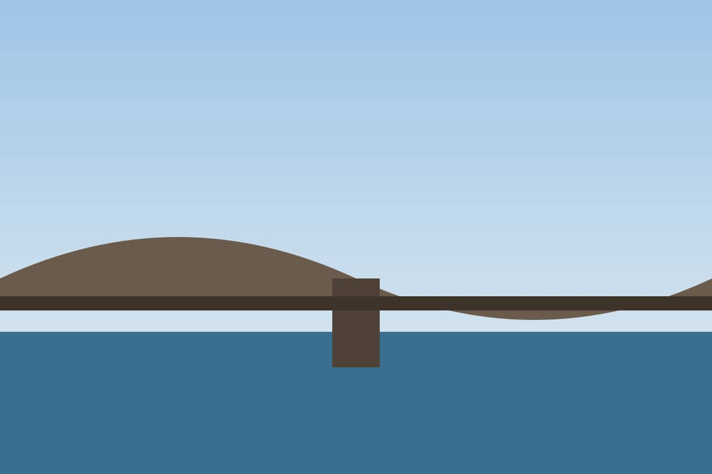

Council votes to repair Old Mill Bridge rather than replace it
A narrow 5-4 decision keeps the 1911 crossing open to pedestrians and buses.

Riverton council voted 5-4 on Monday night to spend £3.2 million repairing Old Mill Bridge instead of building a new crossing, ending a debate that has divided the town for almost two years.
The 1911 stone-and-iron bridge carries about 9,000 pedestrians and cyclists a day, along with the number 4 and number 11 buses. Engineers told councillors last spring that the central pier had lost nearly a fifth of its bearing capacity to scour, the slow erosion of riverbed material around its base.
What the repair involves
The work will drive new steel piles beside the central pier, replace the corroded deck beams on the western span and re-point the masonry arches. A weight limit of 7.5 tonnes will stay in place permanently, which means heavy lorries must continue to use the ring road.
This is the cheaper option, but it is not the cheap option. We are paying to keep something the town loves.
Councillor Maria Delaney, who proposed the repair plan, said the decision protected a landmark and avoided the disruption of building a new bridge on the neighbouring Tanners Quay site. Opponents argued that patching an old structure would only postpone a larger bill.
Construction is expected to begin in March and take fourteen months. The bridge will close to buses for six of those months; a temporary footbridge will keep the riverside path open throughout.
Reaction
Traders on Mill Street welcomed the vote. Several said they had feared a long closure would divert shoppers to the retail park on the edge of town. The Riverton Cycling Club said it was pleased the heritage crossing would survive but asked the council to widen the shared path during the works.
The council will publish the tender documents in January. Local firms are expected to bid, and the council has said it will weight bids that commit to using apprentices from Riverton College.